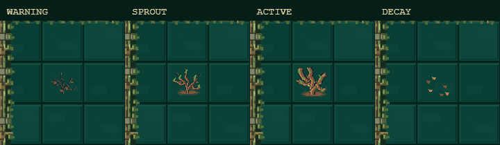
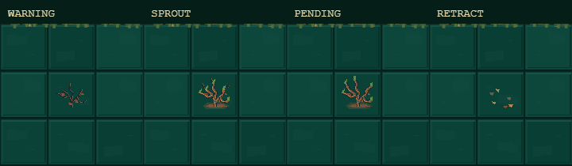
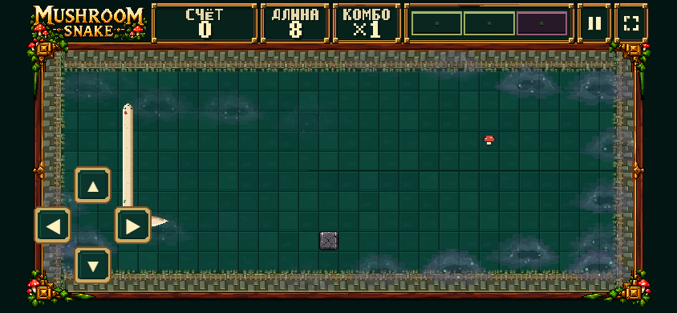

VFX behavior · human review
Play DEV Game Feel Lab · B + Smooth V4. Start Forest, then choose RUSH MOTION, ROOT LIFECYCLE or MIST in Effect Playground. CLEAR EFFECTS returns to normal presentation.
PNGs unchanged. Rush/Mist stress modes persist as read-only render rehearsals; their gameplay durations/speed are unchanged. Root fixture inserts two fixed canonical telegraphs: one safe, one intentionally near existing mandatory food. No hidden relocation. These are scripted diagnostic runs, not claims about fun or natural spawn frequency.
Rush · 30 seconds / S / U / real portal
Fixed distances on the exact V4/Tunnel primitives. Stable side per slot; wake below the Snake. Zero CSS-pixel displacement at the diagnostic bracket reindex; no portal chord.
Native-scale strip scrolls horizontally. OLD 1.00 and NEW 0.00 anchors coincide. The scene is canonical; selected presentation fractions are diagnostic.
Roots · normal and blocked
120-tick telegraph → up to 90 pending ticks → full 360 active ticks, or 18-tick retract. Active expiry also uses 18-tick decay. Canonical phase/deadlines/activation/expiry are hashed.


Mist · mobile / 20 seconds
No circular or elliptical cutout. Puff opacity has a nonzero smooth floor. Near stones/solid Roots (≤5 cells), Snake and goals render above Mist.

Methods and results · Native-clock trace · Bracket anchors · Final-raster stone safety check
No deployment. STOP for human play review; no art approval inferred.